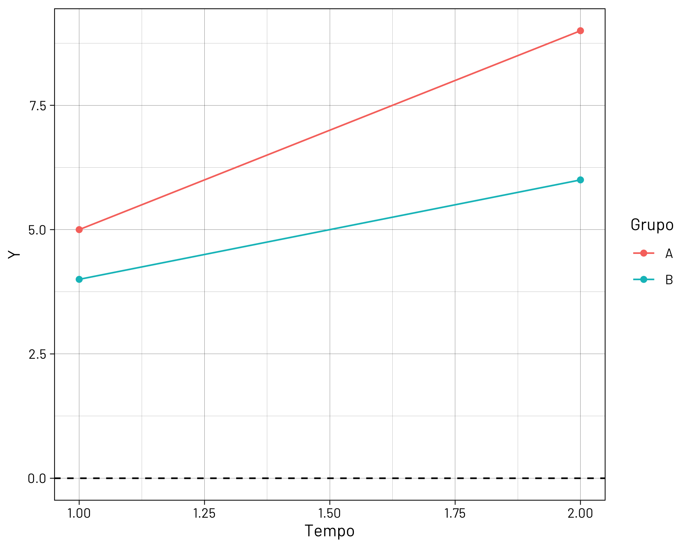

| Y | Unit | ind_b2b | size_small | size_micro |
|---|---|---|---|---|
| ln(wage_hr) | Firm | Dummy | Dummy | Dummy |
| ln(employment) | Firm | Dummy | ||
| ln(employment) | Hexagon | Dummy | ||
| ln(firms) | Hexagon | Share | Share | Share |
Main Results
Average employment per firm
The case of São Paulo, Brazil
PPGE/UFJF and IPEA
PPGE/UFJF
PPGE/UFJF
2024-11-14
Evaluate the impact of rapid transit expansion in São Paulo —Subway (Metrô) and Regional Metro (CPTM)— on the labor market:
Even in a work-from-home world, we are not indifferent to space
Transmission channels
| Study | Region | Intervention | Outcomes | Result |
|---|---|---|---|---|
| 1 | Charlotte, USA | LRT | Employment | No impact |
| 2 | New York City, USA | Hurricane | Employment | Negative |
| 3 | Estocolmo, Sweden | Commuter rail | Employment and wages | Only for immigrants |
| 4 | Berlim, Germany | Wall | Productivity | Positive and exponential |
| 5 | Lima, Peru | BRT | Employment, wages, and firms | Positive, exponential, uneven |
| 6 | Rio de Janeiro, BR | BRT, subway, tram | Employment, wages, and firms | Positive, exponential, uneven |
Rapid transit network (Metrô + CPTM) in 2023
Station openings, 2002-2023
Brazilian employer-employee dataset
Variables: average monthly wage, monthly working hours, industry
Selection filters:
Geolocation:
{tidygeocoder} in R{r5r} Isochrones: \(iso \le 30 \rightarrow\) treatment; \(31 < iso \le 60 \rightarrow\) control

Average wages: firm
Employment: firm and hexagon grid
Number of firms: hexagon grid

DiD challenges pointed out by recent literature1
TWFE decomposition reveals “forbidden” comparisons
Even pre-treatment leads are contaminated \(\rightarrow\) cannot be used for placebo tests or robustnes checks
Solution: address cohort heterogeneity directly
Space heterogeneity: separate analyses by transit line
| Y | Unit | ind_b2b | size_small | size_micro |
|---|---|---|---|---|
| ln(wage_hr) | Firm | Dummy | Dummy | Dummy |
| ln(employment) | Firm | Dummy | ||
| ln(employment) | Hexagon | Dummy | ||
| ln(firms) | Hexagon | Share | Share | Share |
Average employment per firm
Average employment per hexagon
Average hourly wage, firm level
Average number of firms, hexagon level
Average number of firms, hexagon level
| Cohort | All lines | Line 2 | Line 4 | Line 9 | Line 12 |
|---|---|---|---|---|---|
| Average | 0.086* | 0.076 | 0.041 | 0.177* | 0.08 |
| [0.043, 0.129] | [-0.018, 0.17] | [-0.039, 0.121] | [0.037, 0.317] | [-0.052, 0.211] | |
| 2006 | 0.073 | 0.04 | - | - | - |
| [-0.029, 0.176] | [-0.091, 0.171] | - | - | - | |
| 2007 | 0.162* | 0.172* | - | - | - |
| [0.031, 0.292] | [0.032, 0.311] | - | - | - | |
| 2008 | 0.201* | - | - | 0.177* | 0.122 |
| [0.095, 0.307] | - | - | [0.043, 0.311] | [-0.051, 0.295] | |
| 2009 | 0.035 | - | - | - | -0.03 |
| [-0.193, 0.262] | - | - | - | [-0.232, 0.172] | |
| 2010 | 0.045 | 0.192 | 0.046 | - | - |
| [-0.066, 0.156] | [-0.333, 0.716] | [-0.067, 0.16] | - | - | |
| 2011 | 0.031 | 0.04 | 0.014 | - | - |
| [-0.115, 0.177] | [-0.168, 0.248] | [-0.223, 0.251] | - | - | |
| 2012 | -0.017 | - | 0.047 | - | - |
| [-0.148, 0.114] | - | [-0.153, 0.248] | - | - | |
| N | 2552 | 768 | 837 | 367 | 603 |
| Clusters | by: Hexagon | by: Hexagon | by: Hexagon | by: Hexagon | by: Hexagon |
O Estado de S. Paulo, 2023. Fortune, 2023.